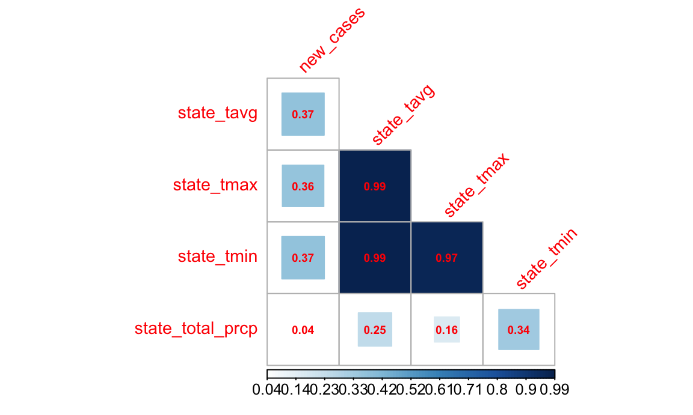

Statistical Analyses
Create datasets
Create datasets with noaa data
The noaa dataset that we used was from the ncdc.noaa.gov website. We retrieved 4 individual datasets from the noaa website. The retrieved dataset includes: 1. tmax: Data for the maximum temperature for each state by month. 2. tmin: Data for the minimum temperature for each state by month. 3. tavg: Data for the average temperaure for each state by month. 4. prcp: Data for the precipitation values for each state by month.
The datasets were scraped from the website using read_csv and were then merged with the COVID19 dataset by month and state.
Import COVID-19 dataset. Clean and tidy data
The COVID-19 dataset was imported using the COVID19 R package. COVID-19 data was obtained from the COVID19 package. This function has arguments set to return data at the state level. This dataset included information on the date, state, as well as the number of cases, tests, and hospitalizations for that given day.
Merging the two datasets
The final dataset has information on average temperature, total precipitation, maximum and minimum temperature as the main climate variables along with COVID-19 data related to the case counts, information about school gathering, workplace gathering, contact tracing and testing, which are important COVID-19 related variables used in the analysis.
Model 1
Hypothesis
Our team hypothesizes that temperature and COVID-19 cases are associated, wherein the number of new cases rises with a decrease in temperature. We have looked at the trends in COVID-19 and Climate in the United States. Check out our interactive map here Trends in COVID-19 and Climate in US Between Jan 2020 and Oct 2020. We want to conduct an analysis to see if cases increase with increase in temperature.
Relevant predictors
The following are the relevant predictors we want to include in the model
new_cases- The number of new cases in every monthcase_count- The total number of cases in every monthpopulation- Total population of each state - This forms the offset variable in the Poisson regression model and the denominator for the count to extrapolate the ratestate_name- All the states in the USstate_tavg- The average temperature in a state in a monthstate_tmax- The maximum temperature in a state in a monthstate_tmin- The minimum temperature in a state in a monthstate_total_prcp- The total precipitation in a state in a month
Assessing crude correlation among our selected variables
library(MASS)
covid_noaa_dataset_cor =
covid_noaa_dataset %>%
dplyr::select(new_cases, state_tavg, state_tmax, state_tmin, state_total_prcp)
covid_noaa_dataset_cor[,3:7] %>%
cor() %>%
corrplot::corrplot(type = "lower",
method = "square",
addCoef.col = "red",
diag = FALSE,
number.cex = .6,
tl.col = "red",
tl.cex = .9,
tl.srt = 45,
is.corr = FALSE)
In order to select the most significant variables in our model, we first conducted a crude correlation assessment using a correlation matrix as shown above. From this assessment, we decided to remove state_tmax and state_tmin since the r is 0.97 - 0.99, indicating that there is an extreme co-linearity among other predictors.
Confounding
There are many variables that would confound the relationship between temperature and case count. We have included ones that we felt are the most important. However, in order to maintain a parsimonious model, we restricted the number of predictors. This could also be a limitation of our model.
Modeling - Poisson vs Negative binomial regression
Our outcome variable is a count variable, hence we want to model either a Poisson regression or a negative binomial regression.
A Poisson distribution assumes that the mean and variance are the same. Sometimes the data shows extra variation that is greater than the mean. This situation is called overdispersion. Negative binomial is more flexible in that regard. Negative binomial has one more parameter that adjusts for the variance independently from the mean.
In order to decide which model to use, we cross validated between the two models to see the distribution. We also assessed the AIC to determine the model with the smaller AIC.
poisson_mod = glm(new_cases ~ as.factor(month_name) + state + state_tavg + state_total_prcp,
family = "poisson"(link = "log"), data = covid_noaa_dataset)
neg_bin_mod = glm.nb(new_cases ~ as.factor(month_name) + state + state_tavg + state_total_prcp,
data = covid_noaa_dataset)AIC for both the models are below -
poisson_mod %>%
broom::glance() %>%
dplyr::select(AIC) %>%
knitr::kable(digits = 4)| AIC |
|---|
| 2593050 |
neg_bin_mod %>%
broom::glance() %>%
dplyr::select(AIC) %>%
knitr::kable(digits = 4)| AIC |
|---|
| 8357.088 |
Cross validation
count_cv =
crossv_mc(covid_noaa_dataset, 100)
count_cv =
count_cv %>%
mutate(
poisson = map(train, ~glm(new_cases ~ as.factor(month) + state + state_tavg + state_total_prcp,
family="poisson" (link = log), data = covid_noaa_dataset)),
neg_binomial = map(train, ~ glm.nb(new_cases ~ as.factor(month) + state + state_tavg + state_total_prcp,
data = covid_noaa_dataset))
) %>%
mutate(
rmse_poisson = map2_dbl(poisson, test, ~rmse(model = .x, data = .y)),
rmse_negative_binomial = map2_dbl(neg_binomial, test, ~rmse(model = .x, data = .y))
)
count_cv %>%
dplyr::select(starts_with("rmse")) %>%
pivot_longer(
everything(),
names_to = "model",
values_to = "rmse",
names_prefix = "rmse_") %>%
mutate(model = fct_inorder(model)) %>%
ggplot(aes(x = model, y = rmse)) + geom_violin() +
labs(
title = "Variation Distributions"
)
From the distribution above, we can see that both the figures are very similar to each other. Solely based on this distribution, we cannot base our decision to use either of the models. Hence we look at the AIC.
The Poisson model has an AIC of 2593050 The negative binomial model has an AIC of 8357.088
Since the negative binomial model has a smaller AIC than the Poisson model, we chose the negative binomial model.
Results 1
nb_output = neg_bin_mod %>%
broom::tidy() %>%
dplyr::select(term, estimate, p.value) %>%
mutate(exp(estimate))
nb_output %>%
knitr::kable(digits = 3)Our results show that the number of case counts significantly decrease with increase in temperature. However, the case counts do not show a significant association with the total precipitation when adjusted for month and states. With every degree Fahrenheit increase in average temperature, the number of cases decreases by 4.3%. This association is significant at the 5% level of significance. This supports our hypothesis that the number of cases would rise with a decrease in temperature. Therefore, there is a possibility that we would expect more cases in winter.
Model 2
There could also be other factors that can influence this relationship, such as governmental restrictions and public health campaigns and discourse. To account for this, we included variables such as school closures, work place closures, and gathering restrictions into our second model.
Data for Model 2
This dataset filters out the variables required for the second model which assesses the influence of school closures, workplace closures, and gathering restrictions on the case counts.
ct_school_work_gather =
covid_noaa_dataset %>%
dplyr::select(date, case_count, new_cases, population, school_closing, workplace_closing, gatherings_restrictions, state, state_name, state_tavg, month_name) %>%
mutate(
school_closing = as.factor(school_closing),
workplace_closing = as.factor(workplace_closing),
gatherings_restrictions = as.factor(gatherings_restrictions)
)Hypothesis
In our initial hypotheses, we have established that there is a negative association between the temperature and COVID-19 cases. We now want to see if this relationship would change with certain events such as school closures, workplace closures, and gathering.
Relevant predictors
The following are the relevant predictors we want to include in the model:
new_cases- The number of new cases in every monthcase_count- The total number of cases in every monthpopulation- Total population of each state - This forms the offset variable in the Poisson regression model and the denominator for the count to extrapolate the ratestate_name- All the states in the USstate_tavg- The average temperature in a state in a monthschool_closing- 0: No measures - 1: Recommend closing - 2: Require closing (only some levels or categories, e.g. just high school, or just public schools - 3: Require closing all levelsworkplace_closing- 0: No measures - 1: Recommend closing (or work from home) - 2: Require closing for some sectors or categories of workers - 3: Require closing (or work from home) all-but-essential workplaces (e.g. grocery stores, doctors)gatherings_restriction- 0: No restrictions - 1: Restrictions on very large gatherings (the limit is above 1000 people) - 2: Restrictions on gatherings between 100-1000 people - 3: Restrictions on gatherings between 10-100 people - 4: Restrictions on gatherings of less than 10 people
Assessing crude correlation among our selected variables
covid_noaa_dataset_cor_2 =
ct_school_work_gather %>%
dplyr::select(new_cases, state_tavg, school_closing, workplace_closing, gatherings_restrictions)
cor_plot =
covid_noaa_dataset_cor_2[,3:7] %>%
hetcor() %>%
as.matrix() %>%
as.data.frame() cor_plot %>%
knitr::kable(digits = 3)| new_cases | state_tavg | school_closing | workplace_closing | gatherings_restrictions | |
|---|---|---|---|---|---|
| new_cases | 1.000 | 0.368 | 0.410 | 0.234 | 0.150 |
| state_tavg | 0.368 | 1.000 | 0.610 | 0.704 | 0.331 |
| school_closing | 0.410 | 0.610 | 1.000 | 0.852 | 0.537 |
| workplace_closing | 0.234 | 0.704 | 0.852 | 1.000 | 0.405 |
| gatherings_restrictions | 0.150 | 0.331 | 0.537 | 0.405 | 1.000 |
We decided to keep school closing and work place closing even with a large R-square value because they are important variables.
Modeling - Negative binomial regression
Our outcome variable is a count variable, hence we want to model a negative binomial regression.
We decided to use the same modeling technique to run a regression analysis.
neg_bin_mod_policy = glm.nb(new_cases ~ month_name + state_name + as.factor(school_closing) + as.factor(workplace_closing) + as.factor(gatherings_restrictions) + state_tavg,
data = covid_noaa_dataset)Results for the second model
nb_output_policy = neg_bin_mod_policy %>%
broom::tidy() %>%
dplyr::select(term, estimate, p.value) %>%
mutate(exp(estimate))
nb_output_policy %>%
knitr::kable(digits = 3)We found a significant association between the number of new case counts and workplace restrictions, at the 5% level of significance. Our second model suggests that the number of case counts decreases for required closing of some sectors of workplaces as compared to no workplace restriction measures by 30%. With every degree Fahrenheit increase in average temperature, the number of cases decrease by 3.7%, adjusting for school, workplace and gathering restrictions. This association is significant at the 5% level of significance. This supports our hypothesis that the number of cases would rise with decrease in temperature.
Model 3
Data for Model 3
This dataset filters out the variables required for the second model which assesses the influence of information campaigns, testing policies, and contact tracing policies on case counts.
ct_infoc_test_tract =
covid_noaa_dataset %>%
dplyr::select(date, case_count, new_cases, population, information_campaigns, testing_policy, contact_tracing, state, state_name, state_tavg, month_name) %>%
mutate(
information_campaigns = as.factor(information_campaigns),
testing_policy = as.factor(testing_policy),
contact_tracing = as.factor(contact_tracing)
)Hypothesis
In our initial hypotheses, we have established that there is a negative association between temperature and COVID-19 cases. We now want to see if this relationship would change with certain policies such as information campaigns, testing policies, and contact tracing policies.
Relevant predictors
The following are the relevant predictors we want to include in the model:
new_cases- The number of new cases in every monthcase_count- The total number of cases in every monthpopulation- Total population of each state - This forms the offset variable in the Poisson regression model and the denominator for the count to extrapolate the ratestate_name- All the states in the USstate_tavg- The average temperature in a state in a monthinformation_campaigns- 0: No COVID-19 public information campaign - 1: Public officials urging caution about COVID-19 - 2: Coordinated public information campaign (e.g. across traditional and social media)testing_policy- 0: No testing policy - 1: Only those who both (a) have symptoms AND (b) meet specific criteria (e.g. key workers, admitted to hospital, came into contact with a known case, returned from overseas) - 2: Testing of anyone showing COVID-19 symptoms - 3: Open public testing (e.g. “drive through” testing available to asymptomatic people)contact_tracing- 0: No contact tracing - 1: Limited contact tracing, not done for all cases - 2: Comprehensive contact tracing, done for all cases
Assessing the crude correlation among our selected variables
covid_noaa_dataset_cor_3 =
ct_infoc_test_tract %>%
dplyr::select(new_cases, state_tavg, information_campaigns, contact_tracing)
cor_plot_2 =
covid_noaa_dataset_cor_3[,3:6] %>%
hetcor() %>%
as.matrix() %>%
as.data.frame() cor_plot_2 %>%
knitr::kable(digits = 3)| new_cases | state_tavg | information_campaigns | contact_tracing | |
|---|---|---|---|---|
| new_cases | 1.000 | 0.368 | 0.846 | 0.271 |
| state_tavg | 0.368 | 1.000 | 0.830 | 0.635 |
| information_campaigns | 0.846 | 0.830 | 1.000 | NA |
| contact_tracing | 0.271 | 0.635 | NA | 1.000 |
We decided to remove testing_policy from the model due to co-linearity with other predictors.
Modeling - Negative binomial regression
Our outcome variable is a count variable, hence we want to model a negative binomial regression.
We decided to use the same modeling technique to run a regression analysis as the previous models.
neg_bin_mod_public_health = glm.nb(new_cases ~ month_name + state_name + as.factor(information_campaigns) + as.factor(testing_policy) + as.factor(contact_tracing) + state_tavg,
data = ct_infoc_test_tract)Results for the third model
nb_output_public_health = neg_bin_mod_public_health %>%
broom::tidy() %>%
dplyr::select(term, estimate, p.value) %>%
mutate(exp(estimate))
nb_output_public_health %>%
knitr::kable(digits = 3)We did not find a significant association between policies, such as information campaigns and contact tracing, and the number of new cases, while controlling for temperature. With every degree Fahrenheit increase in average temperature, the number of cases decrease by 4.3%, adjusting for information campaigns and contact tracing. This association is significant at the 5% level of significance. This supports our hypothesis that the number of cases would rise with decrease in temperature.
Limitations for the models
We have not accounted for additional variables that could influence the results of association between temperature and number of new cases. Additionally, since we have already adjusted for state, the true association between policies and restrictions might not be reflected as they are specific to the state.